DELLOSSO.ORG
The Dell'Osso Family Web Site and Genealogy
Home |
Bird Dogs (Brittany) |
Hunting Field & Water Trials |
Upland Bird & Waterfowl Hunting |
Deer Hunting (Bow, Shotgun, & Rifle) |
Model Trains |
Other Pleasures
[Chrome browser users: install Google Translate app for other languages]
Model Trains (Scale = 1:48)
Manual Train Operation
Any train stored in one of the sidings on either the lower or upper level can be activated and moved onto the main tracks and run manually by controlling the speed on each track section and switching either Switch Track 1, 2, 3, or 4. Alternatively, engines and cabooses stored in F1 - F4 can be activated and moved onto the main tracks where cars from the display case can be used to make up a full train. Full trains in the display case can also be placed on the main tracks or, engines, cabooses and freight cars can be retrieved from the display case and placed on the main tracks as a full train.
Model Train Videos
During these videos, traina run automatically on routes determined by the settings of switches controlling switch tracks, blocks, relays, and number of trains on main layout. Freight [F], Passenger [P], and Work [W]
[Videos, which can be viewed full screen and volume adjusted, will load in new tabs and play automatically; the load time varies with your connection speed and browser]
Train on the Elevated Line [EL]
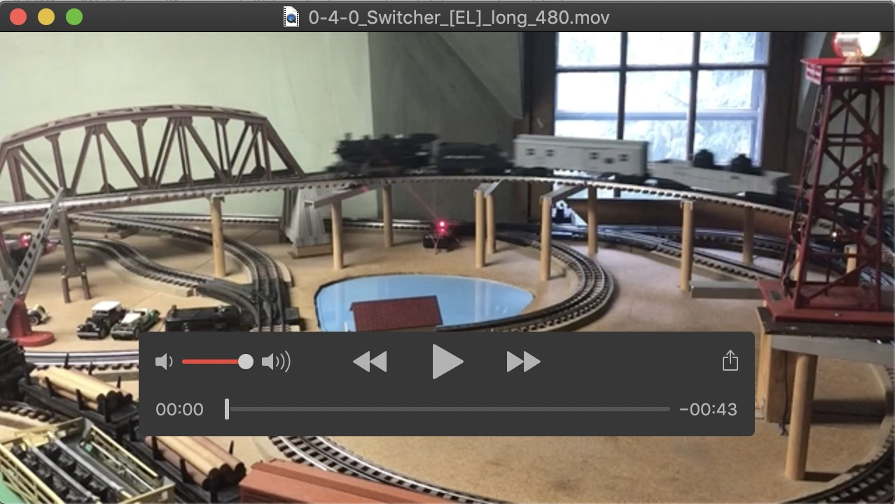
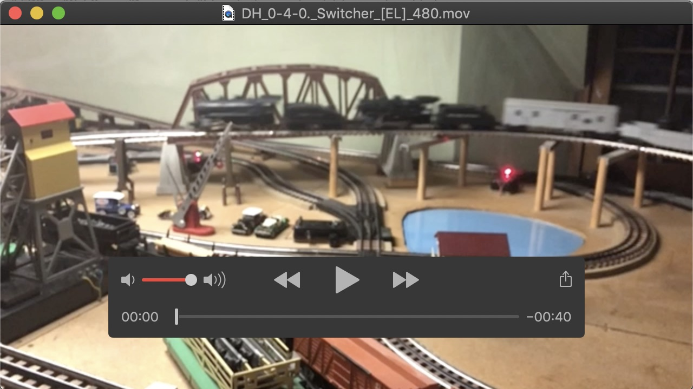
Switcher 0-4-0 [W] <==> {Double-Headed} Switchers 0-4-0 [W]
Single Train on the Lower Main Layout [A & B] +/- Second Train on EL
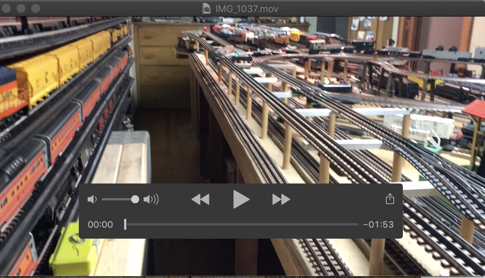
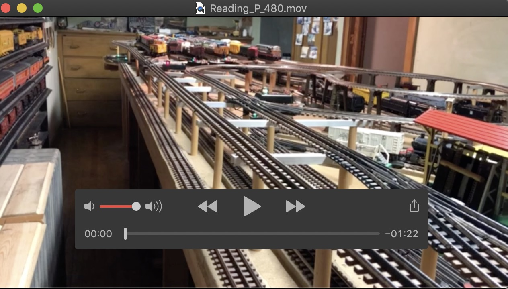
Union Pacific [F] + Switcher 0-4-0 [W] <==> TCA 4-6-4 [P]
Single Train on the Main Layout [A, B, UH, & DH] +/- Second Train on EL
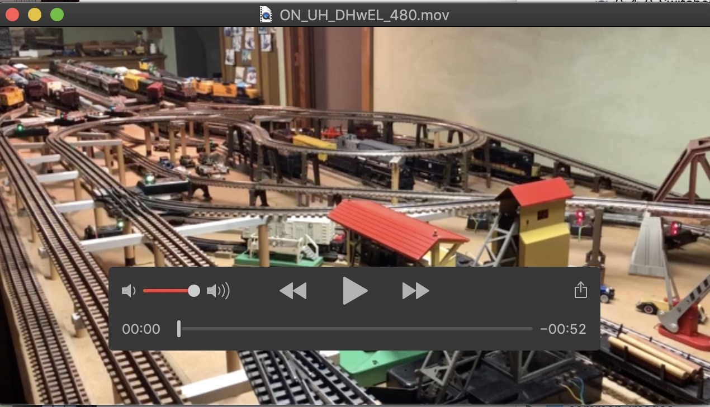
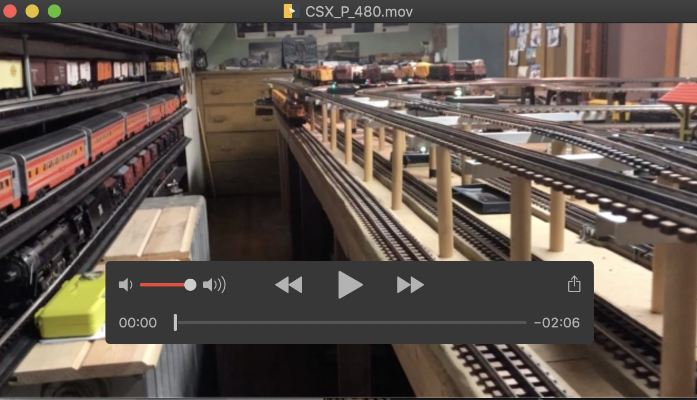
Ontario Northland [F] + Switcher 0-4-0 [W] <==> CSX [F]
Single Train on the Main Layout [A, B, UH, & DH] (Engineer's View) +/- Second Train on EL
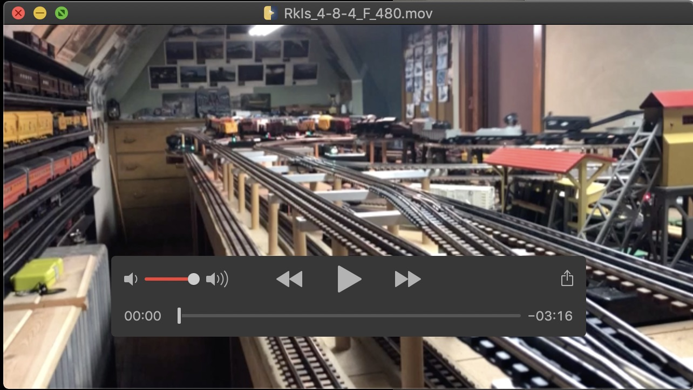
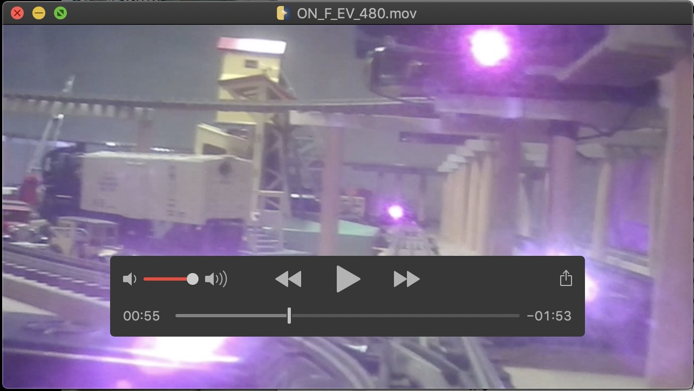
Rock Island 4-8-4 [F] + Switcher 0-4-0 [W] <==> Ontario Northland [F]+ Switcher 0-4-0 [W] (Engineer's View)
Single LONG Train on the Main Layout [A, B, UH, & DH]
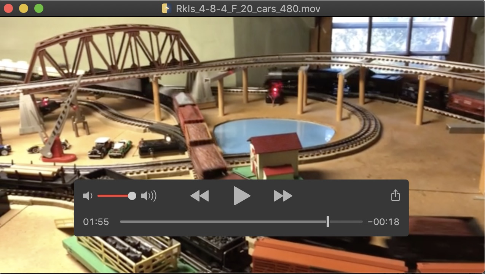
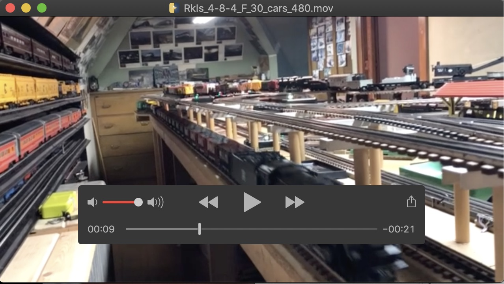
Rock Island 4-8-4 Pulling 20 Freight Cars <==> Rock Island 4-8-4 Pulling 30 Freight Cars
-------------------------------------------------------------------------------------------------------------------------------------------------
Top of page
Two Trains on the Main Layout [A, B, UH, & DH] with intersecting routes (#1 on A & B and #2 on UH, DH, & A) +/- Third Train on EL
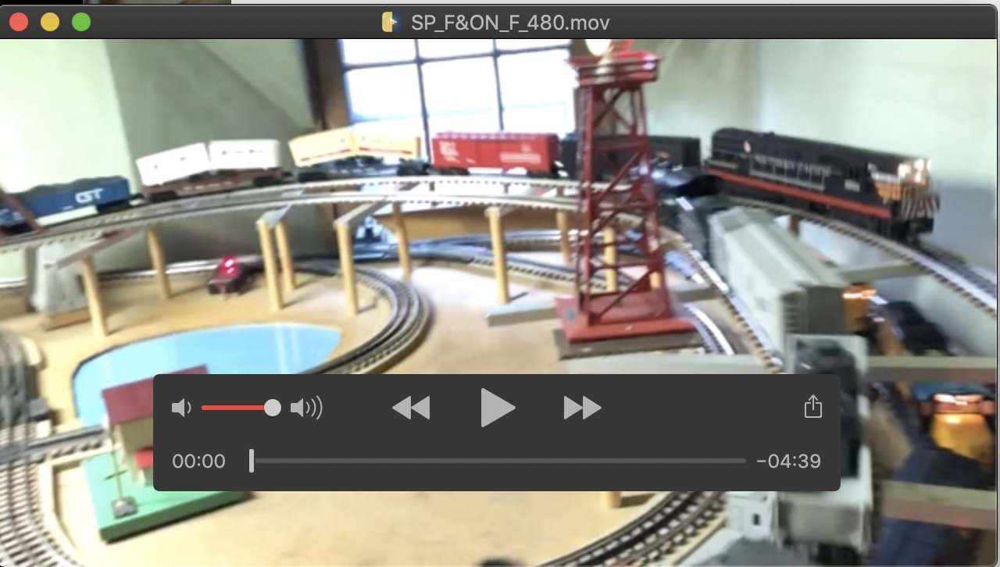
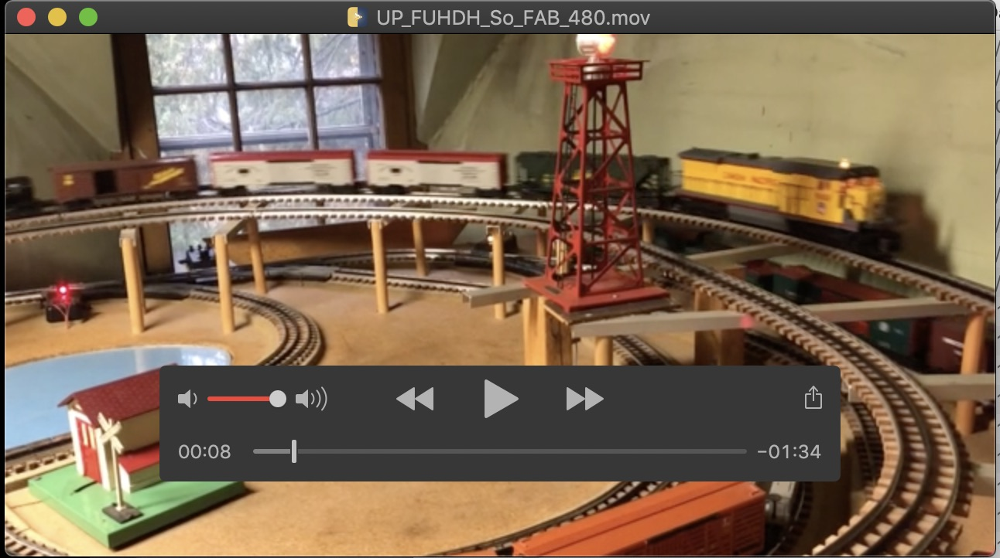
#1 Ontario Northland [F] #2 Southern Pacific [F] #3 Switcher 0-4-0 [W] <==> #1 Southern 4-8-4 [F] #2 Union Pacific [F] #3 Switcher 0-4-0 [W]
Two Trains on the Main Layout [A, B, UH, & DH] with alternating routes (Sharing A, B, UH, & DH) +/- Third Train on EL
N&W & SP 4-8-4 [P] + Switcher 0-4-0 [W] VIDEO in PROGRESS<==> SP [F] & CSX [F] + Switcher 0-4-0 [W] VIDEO in PROGRESS
{2 Hudsons} NYC & TCA 4-6-4 [P] + Switcher 0-4-0 [W] VIDEO in PROGRESS<==> Southern 4-8-4 [F] & Reading 4-6-2 [F] + Switcher 0-4-0 [W] VIDEO in PROGRESS
-------------------------------------------------------------------------------------------------------------------------------------------------
Top of page
Three Trains on the Main Layout [A, B, UH, & DH] with alternating and intersecting routes (#1 & #2 Sharing A & B, and #3 on UH, DH, & A) +/- Fourth Train on EL
TCA 4-6-4 [P], N&W, & SP 4-8-4 [P] + Switcher 0-4-0 [W] VIDEO in PROGRESS<==> {3 Hudsons} NYC 4-6-4 [P], B&A, & 773 4-6-4 [F] + Switcher 0-4-0 [W] VIDEO in PROGRESS
Three Trains on the Main Layout [A, B, UH, & DH] with alternating routes (Sharing A, B, UH, & DH) +/- Fourth Train on EL
TCA 4-6-4 [P], N&W, & SP 4-8-4 [P] + Switcher 0-4-0 [W] VIDEO in PROGRESS<==> {3 Hudsons} NYC 4-6-4 [P], B&A, & 773 4-6-4 [F] + Switcher 0-4-0 [W] VIDEO in PROGRESS
Model Train Layout
Top of page
Home |
Bird Dogs (Brittany) |
Hunting Field & Water Trials |
Upland Bird & Waterfowl Hunting |
Deer Hunting (Bow, Shotgun, & Rifle) |
Model Trains |
Other Pleasures